Explore Ephesus
A Brief History
Ephesus was a major Ionian Greek city whose Artemis temple and later Roman harbour made it capital of Asia province, drawing colonnaded avenues, the Library of Celsus, and an amphitheatre that could host political assembly. Early Christian councils met here, and tradition places the Virgin Mary's house nearby on Bulbuldag. Silting of the Cayster River moved the settlement toward Selçuk, leaving extensive ruins that record classical urban life on the Aegean coast.
Attractions Map
Top Sights & Activities
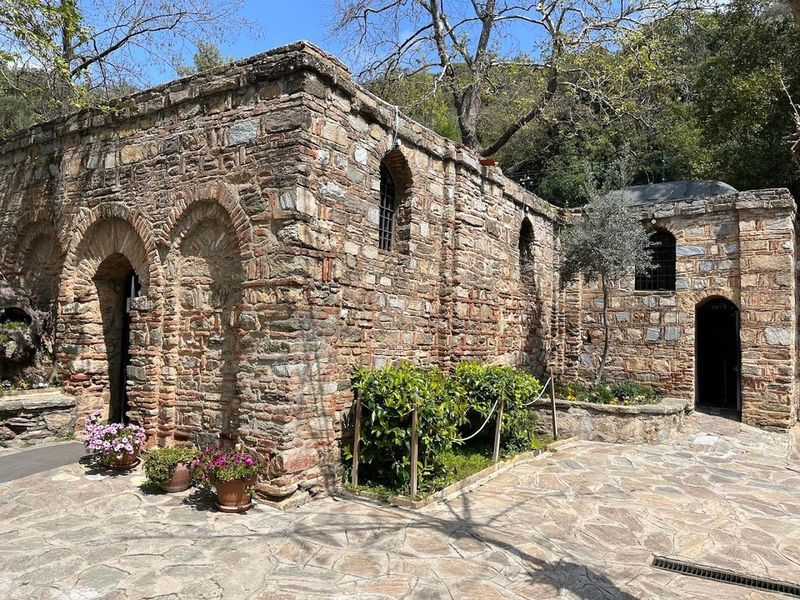
House of Virgin Mary
in the Dilek National Park, the House of the Virgin Mary is a revered pilgrimage site for both Christians and Muslims. Believed to be the final home of Mary after Jesus' death, it offers a tranquil and spiritual experience. travellers can't take pictures inside but can leave wishes on a wishing wall outside. The surrounding area features lush gardens with fruits and flowers, as well as a water fountain believed to have healing powers.
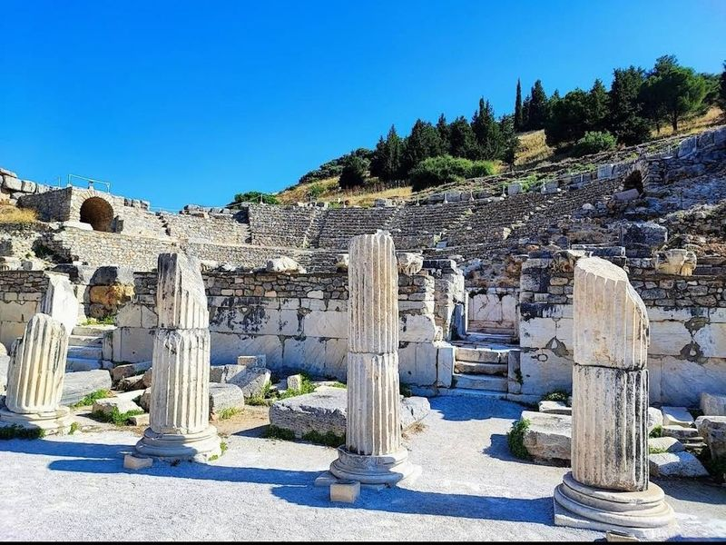
Ephesus Ancient Greek Theatre
Ephesus Ancient Greek Theatre, built in the 3rd century BC, is a remarkable amphitheater with marble columns and remnants of a stage. It's an essential destination to explore if 're in the vicinity. Hiring a guide for two hours at 500TL is recommended as they provide valuable insights about the site. Make sure purchase tickets for both Ephesus and Terrace Houses exhibit; they cost 160TL each.
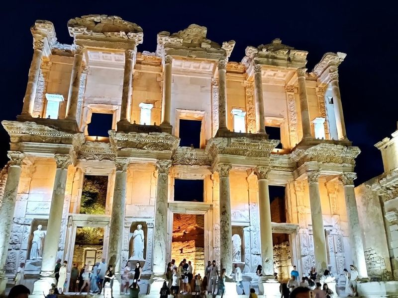
Ephesus Ancient City
Ephesus Ancient City, located in the town of Selcuk, Izmir province, is a well-preserved archaeological site that offers a glimpse into the ancient Greek and Roman civilizations. The city features monumental ruins of Roman and Greek temples, a theater, and the impressive Library of Celsus. Ephesus was once an important city mentioned in the Bible and continues to retain its majesty to this day.
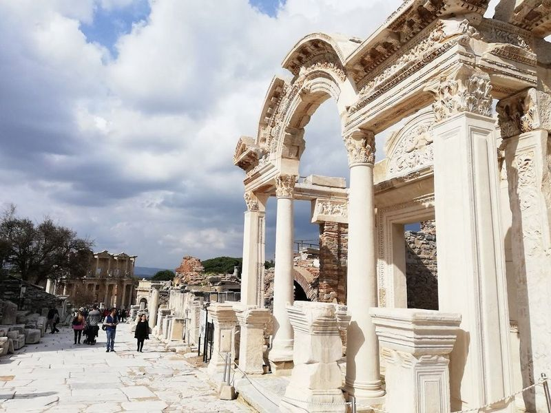
Library of Celsus
Celsus Library in Ephesus, a 2nd-century Roman library ruins, is an symbol of the ancient city. The columned facade with its two-story structure stands as a testament to its rich history. travellers are suggested to get an audio or walking tour guide for better understanding of the place and spend about 1.5hrs here. One can also find friendly cats around the area and photographers who can take picture for a fee in front of the library.
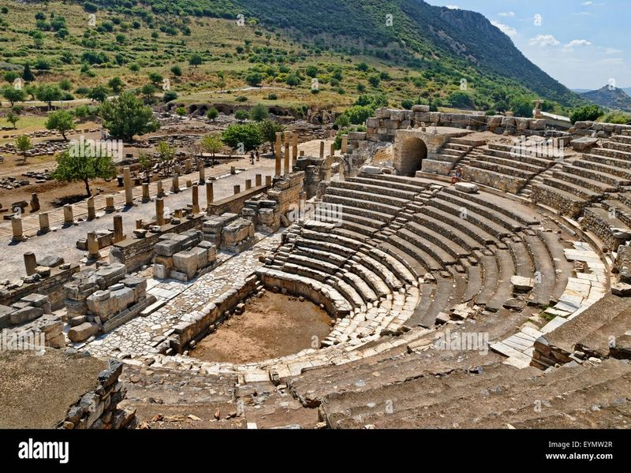
Odeon
Selcuk Pidecisi is a pide shop located near the Selcuk Museum, away from the touristy hustle. It offers delicious and crispy pide along with a variety of guvec dishes. The restaurant has garnered positive reviews for its great food, fast service, and clean ambiance. travellers can enjoy watching the chef prepare dishes in the wood fire oven. The place is popular among locals as a take-out and delivery spot, indicating its quality.
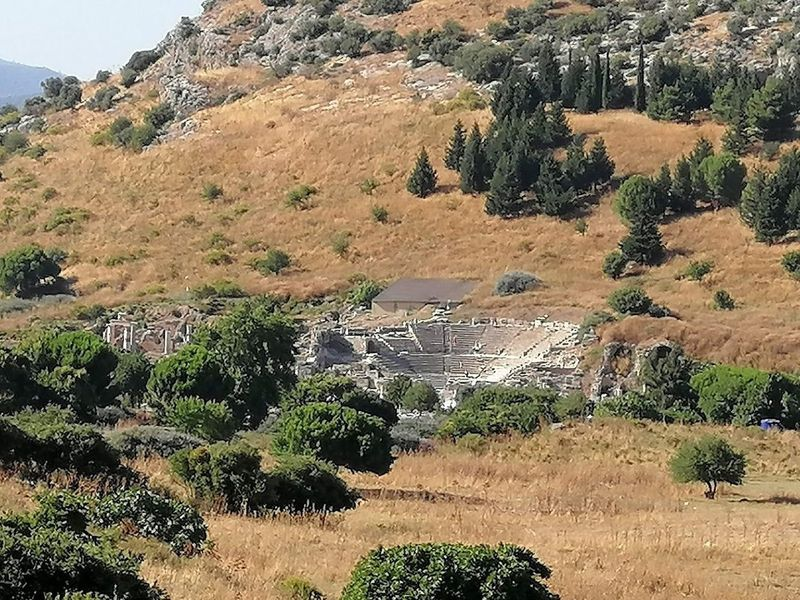
Virgin Mary Statue
Selcuk Pidecisi is a pide shop located near the Selcuk Museum, away from the touristy hustle. It offers delicious and crispy pide along with a variety of guvec dishes. The restaurant has garnered positive reviews for its great food, fast service, and clean ambiance. travellers can enjoy watching the chef prepare dishes in the wood fire oven. The place is popular among locals as a take-out and delivery spot, indicating its quality.
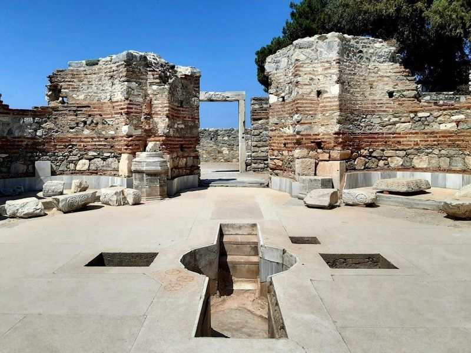
Basilica of Saint John
BASILICA The site is catalogued as a historical landmark. The site is catalogued as a historical landmark. The site is catalogued as a historical landmark. Basilica of Saint John is listed among principal sites for Ephesus within Turkey. Municipal and regional heritage listings document its place in the historic centre and travellers routes through Ephesus.
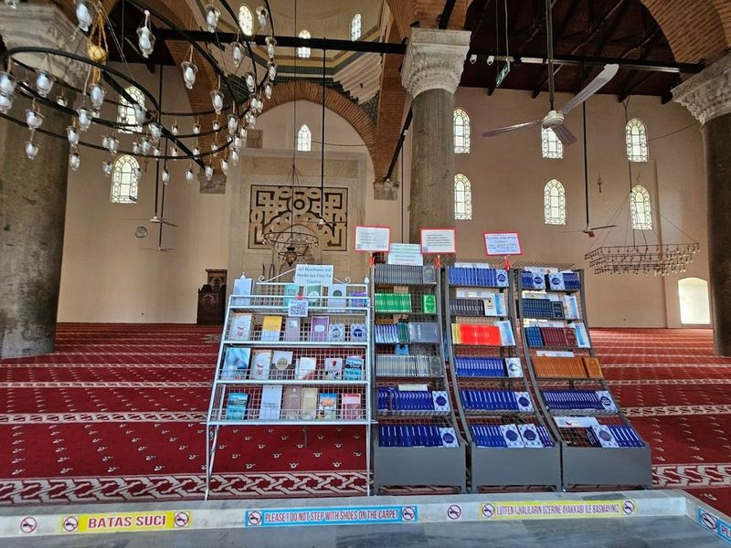
İsa Bey Mosque
İsa Bey Mosque, a example of Anatolian architecture, features rich ornamentation and a unique asymmetrical style. It is renowned as the oldest Turkish mosque with a courtyard design. at the foot of Ayasuluk Castle, it offers a different kind of beauty compared to the grand mosques of Istanbul. The area surrounding the mosque is geared towards tourism, offering guest houses and guided tours to explore nearby attractions such as Ephesus Museum and Basilica of St. John.
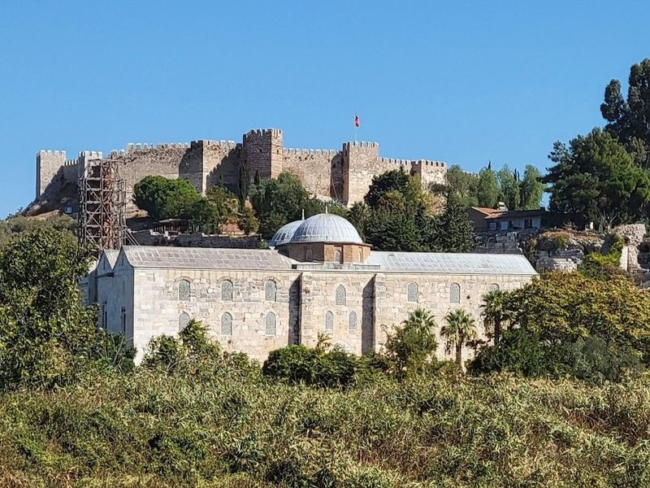
The Temple of Artemis
The Temple of Artemis, once celebrated as one of the Seven Wonders of the Ancient World, is a must-visit historic site located just a few kilometers from Ephesus and within walking distance from Selcuk. Although time has taken its toll on this structure, travellers can still marvel at a solitary pillar that stands as a testament to its grandeur dating back to 550 BC. The remnants evoke curiosity about what this temple might have looked like in its prime.
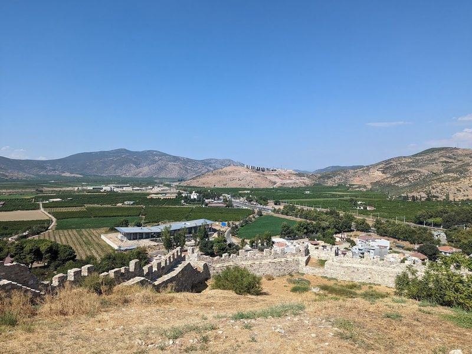
Ayasuluk Citadel
Ayasuluk Citadel, situated in the historic region of Selcuk, is a significant site that includes the Temple of Artemis. Perched on a hill overlooking the Selcuk district and located near the ancient Greek city of Ephesus, this castle was constructed using stones from abandoned Greek and Roman ruins. While it has undergone partial restoration, there is still much work to be done to preserve its rich heritage.
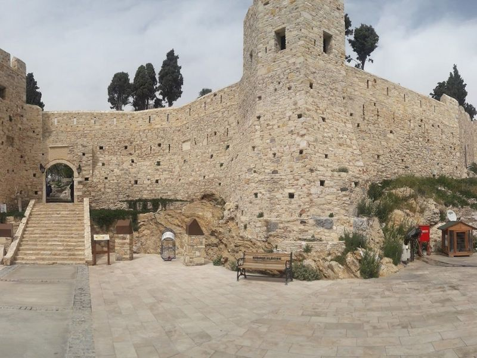
Kuşadası Castle
within the picturesque Pigeon Island, Kusadasi Castle is a must-visit destination. Connected to the city center by a causeway, this small island offers a blend of natural beauty and historical significance. The castle, also known as the Pirate Castle, dates back to the 14th or 15th century and was constructed during the Ottoman era by Admiral Barbarossa. It served as a defense against pirates in the past.
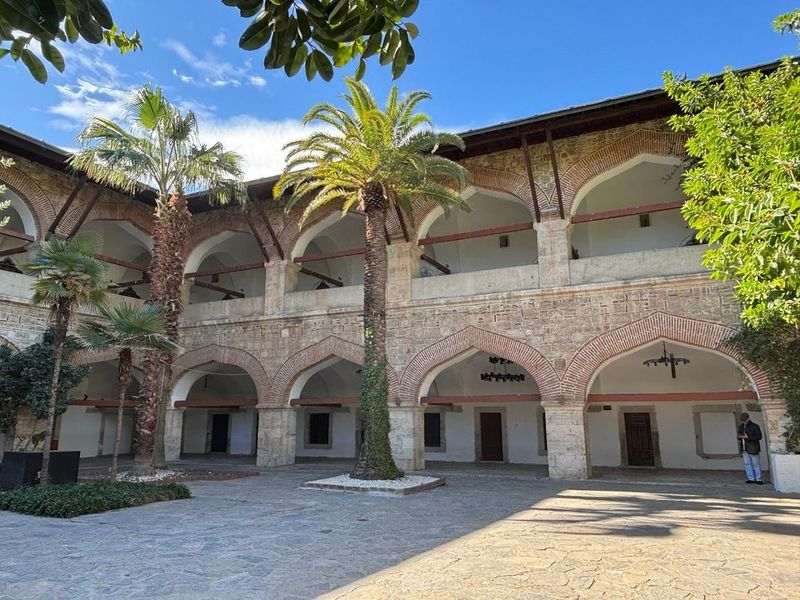
Kervansaray Kusadasi
Kervansaray Kusadasi is a holiday destination located in the Aydin region of Turkey. The town offers an shopping experience with a wide variety of items to choose from, and travellers are encouraged to haggle for the prices. In addition to its shopping scene, Kervansaray Kusadasi boasts historical sites such as Ephesus, the house of the Virgin Mary, and the temple of Artemis.
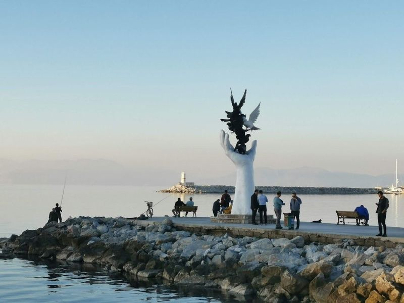
El Heykeli
El Heykeli is a massive sculpture located on the waterfront, offering a picturesque backdrop of turquoise waters. It's a popular spot for locals and tourists to take postcard-worthy photos, especially in the late afternoon as the sun sets. Walking along the waterfront towards Setur Kusadasi Marina provides views of the water and an enjoyable path. The area is known for its friendly atmosphere, with plenty of opportunities to capture memories through photographs.
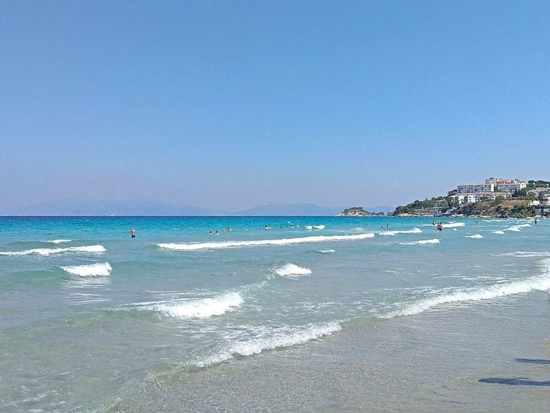
Ladies Beach
Ladies Beach, also known as Kadinlar Denizi, is a well-known and lively beach in Kusadasi. Initially reserved for women during the Ottoman period, it now welcomes everyone. The beach offers a atmosphere with its palm-lined promenade featuring shops, bars, cafes, and hotels that create a resort-like feel.